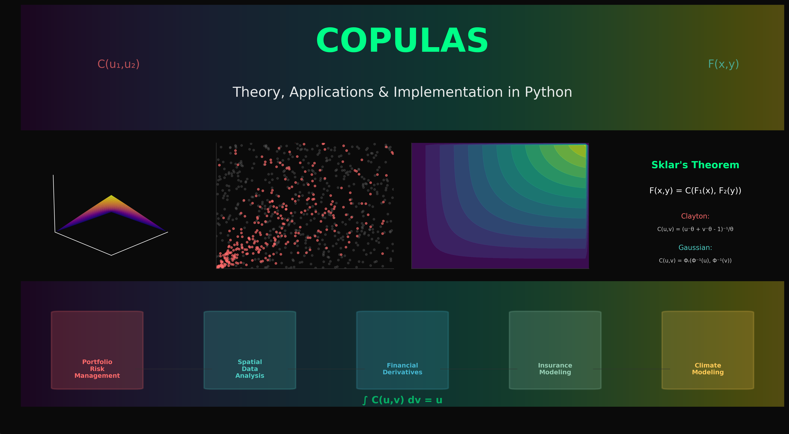
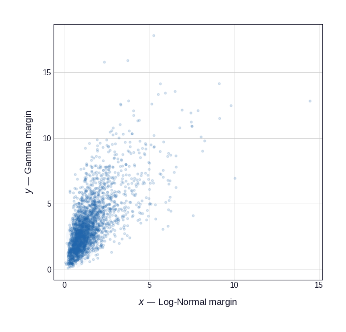
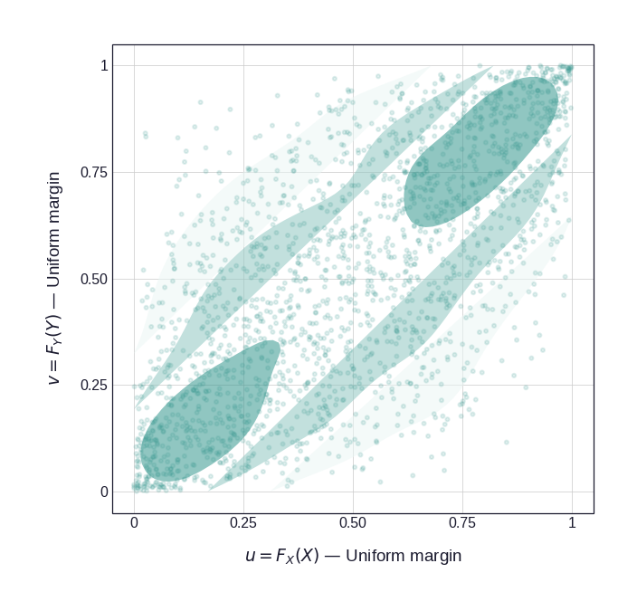
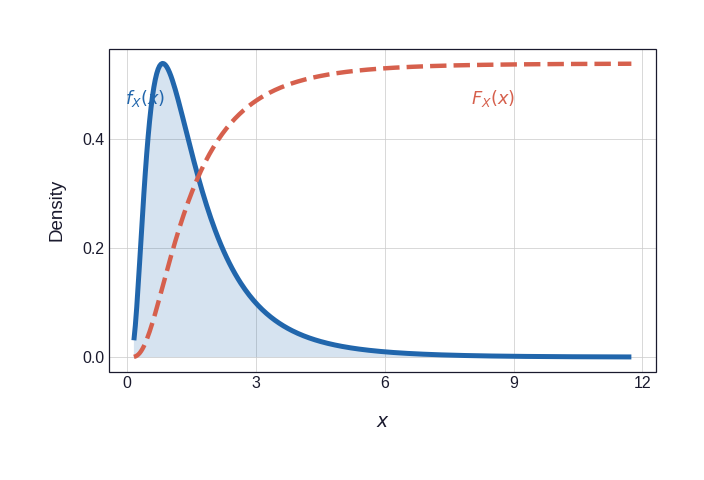
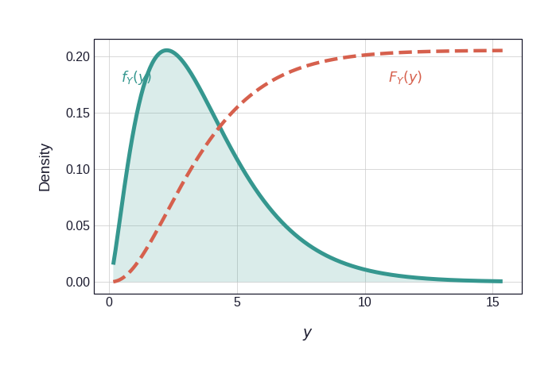

1 What are Copulas?
Have you ever tried to model the relationship between two or more variables, but found that they don’t follow a nice, clean multivariate normal distribution? Real-world data, especially in finance or insurance, is often messy. Variables can have different distributions (some normal, some skewed, some with fat tails), and their dependence can be more complicated than simple linear correlation.
This is where copulas come in. The word “copula” means “link” or “tie,” and that’s exactly what they do: they link marginal distributions of variables together to form a multivariate distribution. The key idea is to separate the dependence structure from the marginal distributions. This means you can model the distribution of each variable on its own, and then use a copula to describe how they move together.
This separation is incredibly powerful. It allows us to model complex dependencies, like the tendency of assets to crash together in a financial crisis (tail dependence), without being constrained by assumptions like normality.
2 Sklar’s Theorem
Before we can state the theorem, we need a precise definition of what a copula actually is.
A bivariate copula is a function \(C: [0,1]^2 \to [0,1]\) that satisfies:
- Grounded: \(C(u, 0) = C(0, v) = 0\) for all \(u, v \in [0,1]\).
- Standard uniform margins: \(C(u, 1) = u\) and \(C(1, v) = v\) for all \(u, v \in [0,1]\).
- 2-increasing: For every rectangle \([u_1, u_2] \times [v_1, v_2] \subseteq [0,1]^2\), \[ C(u_2, v_2) - C(u_2, v_1) - C(u_1, v_2) + C(u_1, v_1) \;\geq\; 0. \]
In plain terms, a copula is simply a joint CDF on \([0,1]^2\) whose marginals are both \(\mathrm{Uniform}(0,1)\). The 2-increasing condition ensures that the probability assigned to any axis-aligned rectangle is non-negative — i.e., \(C\) is a valid distribution function.
Three special copulas serve as reference points. The Fréchet–Hoeffding bounds define the extreme cases of dependence (Nelsen 2006):
\[ W(u, v) = \max(u + v - 1,\, 0) \;\leq\; C(u, v) \;\leq\; \min(u, v) = M(u, v), \]
where \(W\) represents perfect negative dependence (countermonotonicity) and \(M\) perfect positive dependence (comonotonicity). Between the two extremes lies the independence copula \(\Pi(u, v) = uv\). With this machinery in place, we are ready for the central result of copula theory.
Sklar’s theorem has two profound consequences. First, every bivariate distribution — however exotic its marginals or dependence — admits a copula representation. Copulas are not a restricted model class; they provide an exact characterisation of all joint distributions. Second, continuity of the marginals pins down the copula uniquely, making the dependence structure an intrinsic property of the distribution rather than an artefact of parameterisation.
2.1 The Probability Integral Transform
The bridge between the original variables and the unit square is the Probability Integral Transform (PIT). If \(X\) is a continuous random variable with CDF \(F_X\), then
\[ U \;=\; F_X(X) \;\sim\; \mathrm{Uniform}(0, 1). \]
The proof is immediate: \(\mathbb{P}(U \leq u) = \mathbb{P}(F_X(X) \leq u) = \mathbb{P}(X \leq F_X^{-1}(u)) = u\). The PIT standardises any continuous random variable onto \([0,1]\), removing its marginal distribution while preserving its rank structure.
Applied to a bivariate pair \((X, Y)\), the PIT yields pseudo-observations
\[ U = F_X(X), \qquad V = F_Y(Y), \]
both of which are \(\mathrm{Uniform}(0,1)\) by construction. Their joint distribution is the copula:
\[ \mathbb{P}(U \leq u,\; V \leq v) = \mathbb{P}\!\bigl(F_X(X) \leq u,\; F_Y(Y) \leq v\bigr) = F\!\bigl(F_X^{-1}(u),\; F_Y^{-1}(v)\bigr) = C(u, v). \]
Figure 1 illustrates this for a bivariate distribution with Log-Normal and Gamma marginals coupled by a Gaussian copula with \(\rho = 0.72\). The left panel shows the original joint distribution in the natural observation scale; the right panel shows what remains after the PIT — the copula structure, freed from the marginal shapes.
Code
np.random.seed(42)
_n = 2000
_rho = 0.72
_Z = np.random.multivariate_normal([0, 0], [[1, _rho], [_rho, 1]], _n)
_U = stats.norm.cdf(_Z[:, 0])
_V = stats.norm.cdf(_Z[:, 1])
_X = stats.lognorm.ppf(_U, s=0.7, scale=np.exp(0.3))
_Y = stats.gamma.ppf(_V, a=2.5, scale=1.5)
df_xy = pd.DataFrame({'x': _X, 'y': _Y})
df_uv = pd.DataFrame({'u': _U, 'v': _V})
_th_scatter = (
theme_academic(base_size=9)
+ pn.theme(legend_position='none', figure_size=(4.5, 4.3))
)
p_joint = (
pn.ggplot(df_xy, pn.aes('x', 'y'))
+ pn.stat_density_2d(
pn.aes(fill=pn.after_stat('level')),
geom='polygon', alpha=0.55
)
+ pn.geom_point(alpha=0.15, size=0.65, color=ACADEMIC_COLORS['cobalt'])
+ pn.scale_fill_gradient(
low='#EEF4FB', high=ACADEMIC_COLORS['cobalt']
)
+ pn.labs(
x='$x$ \u2014 Log-Normal margin',
y='$y$ \u2014 Gamma margin'
)
+ _th_scatter
)
p_cop = (
pn.ggplot(df_uv, pn.aes('u', 'v'))
+ pn.stat_density_2d(
pn.aes(fill=pn.after_stat('level')),
geom='polygon', alpha=0.55
)
+ pn.geom_point(alpha=0.15, size=0.65, color=ACADEMIC_COLORS['teal'])
+ pn.scale_fill_gradient(
low='#EBF7F5', high=ACADEMIC_COLORS['teal']
)
+ pn.coord_cartesian(xlim=(0, 1), ylim=(0, 1))
+ pn.scale_x_continuous(breaks=[0, 0.25, 0.5, 0.75, 1.0],
labels=['0', '0.25', '0.50', '0.75', '1'])
+ pn.scale_y_continuous(breaks=[0, 0.25, 0.5, 0.75, 1.0],
labels=['0', '0.25', '0.50', '0.75', '1'])
+ pn.labs(
x='$u = F_X(X)$ \u2014 Uniform margin',
y='$v = F_Y(Y)$ \u2014 Uniform margin'
)
+ _th_scatter
)
from IPython.display import display
display(p_joint)
display(p_cop)

Figure 2 shows the two marginal CDFs that mediate the transformation. The dashed vermillion curve in each panel is the CDF scaled to the PDF axis for visual comparison; it is this curve that is applied pointwise to each observation to produce the pseudo-observations \((U_i, V_i)\).
Code
_th_marg = (
theme_academic(base_size=9)
+ pn.theme(legend_position='none', figure_size=(4.5, 3.0))
)
# ── Marginal X : LogNormal ─────────────────────────────────────────────────
_lnorm = stats.lognorm(s=0.7, scale=np.exp(0.3))
_xv = np.linspace(_lnorm.ppf(1e-3), _lnorm.ppf(0.999), 350)
_pdx = _lnorm.pdf(_xv)
_cdx = _lnorm.cdf(_xv)
_scale_x = _pdx.max()
df_mx = pd.DataFrame({
'x': np.r_[_xv, _xv],
'y': np.r_[_pdx, _cdx * _scale_x],
'curve': ['PDF'] * len(_xv) + ['CDF'] * len(_xv),
})
_ann_x_pdf = _xv[np.argmax(_pdx)] * 0.52
_ann_x_cdf = _xv[int(len(_xv) * 0.72)]
p_mx = (
pn.ggplot(df_mx)
+ pn.geom_area(
df_mx[df_mx.curve == 'PDF'], pn.aes('x', 'y'),
fill=ACADEMIC_COLORS['cobalt'], alpha=0.18
)
+ pn.geom_line(
df_mx[df_mx.curve == 'PDF'], pn.aes('x', 'y'),
color=ACADEMIC_COLORS['cobalt'], size=1.35
)
+ pn.geom_line(
df_mx[df_mx.curve == 'CDF'], pn.aes('x', 'y'),
color=ACADEMIC_COLORS['vermillion'], size=1.2, linetype='dashed'
)
+ pn.annotate('text', x=_ann_x_pdf, y=_scale_x * 0.88,
label='$f_X(x)$', color=ACADEMIC_COLORS['cobalt'], size=8.5)
+ pn.annotate('text', x=_ann_x_cdf, y=_scale_x * 0.88,
label='$F_X(x)$', color=ACADEMIC_COLORS['vermillion'], size=8.5)
+ pn.labs(x='$x$', y='Density')
+ _th_marg
)
# ── Marginal Y : Gamma ─────────────────────────────────────────────────────
_gam = stats.gamma(a=2.5, scale=1.5)
_yv = np.linspace(_gam.ppf(1e-3), _gam.ppf(0.999), 350)
_pdy = _gam.pdf(_yv)
_cdy = _gam.cdf(_yv)
_scale_y = _pdy.max()
df_my = pd.DataFrame({
'x': np.r_[_yv, _yv],
'y': np.r_[_pdy, _cdy * _scale_y],
'curve': ['PDF'] * len(_yv) + ['CDF'] * len(_yv),
})
_ann_y_pdf = _yv[np.argmax(_pdy)] * 0.48
_ann_y_cdf = _yv[int(len(_yv) * 0.75)]
p_my = (
pn.ggplot(df_my)
+ pn.geom_area(
df_my[df_my.curve == 'PDF'], pn.aes('x', 'y'),
fill=ACADEMIC_COLORS['teal'], alpha=0.18
)
+ pn.geom_line(
df_my[df_my.curve == 'PDF'], pn.aes('x', 'y'),
color=ACADEMIC_COLORS['teal'], size=1.35
)
+ pn.geom_line(
df_my[df_my.curve == 'CDF'], pn.aes('x', 'y'),
color=ACADEMIC_COLORS['vermillion'], size=1.2, linetype='dashed'
)
+ pn.annotate('text', x=_ann_y_pdf, y=_scale_y * 0.88,
label='$f_Y(y)$', color=ACADEMIC_COLORS['teal'], size=8.5)
+ pn.annotate('text', x=_ann_y_cdf, y=_scale_y * 0.88,
label='$F_Y(y)$', color=ACADEMIC_COLORS['vermillion'], size=8.5)
+ pn.labs(x='$y$', y='Density')
+ _th_marg
)
display(p_mx)
display(p_my)

2.2 Copula Density and Likelihood Decomposition
When \(F_X\) and \(F_Y\) admit densities \(f_X\) and \(f_Y\), differentiating Equation 1 with respect to \(x\) and \(y\) yields the joint density decomposition:
\[ f(x, y) \;=\; c\!\bigl(F_X(x),\; F_Y(y)\bigr) \cdot f_X(x) \cdot f_Y(y), \tag{2}\]
where \(c(u, v) = \frac{\partial^2 C(u,v)}{\partial u\, \partial v}\) is the copula density. Equation Equation 2 is the density analogue of Sklar’s theorem: the joint density factorises into the product of the marginal densities and the copula density, which captures all dependence (Joe 1997).
This factorisation is the workhorse of parametric copula estimation. For \(n\) i.i.d. observations \((x_i, y_i)\), the log-likelihood separates as
\[ \ell\!\bigl(\theta,\, \boldsymbol{\psi}\bigr) \;=\; \underbrace{ \sum_{i=1}^n \log c_\theta\!\bigl(F_X(x_i;\psi_X),\; F_Y(y_i;\psi_Y)\bigr) }_{\text{copula log-likelihood}} \;+\; \underbrace{ \sum_{i=1}^n \log f_X(x_i;\psi_X) \;+\; \sum_{i=1}^n \log f_Y(y_i;\psi_Y) }_{\text{marginal log-likelihoods}}, \]
where \(\theta\) parameterises the copula and \(\boldsymbol{\psi} = (\psi_X, \psi_Y)\) the marginals. The Inference Functions for Margins (IFM) method (Joe 1996) exploits this separation by first estimating \(\hat{\boldsymbol{\psi}}\) from the marginal likelihoods and then plugging \(\hat{F}_X, \hat{F}_Y\) into the copula likelihood to estimate \(\theta\). This reduces a high-dimensional joint optimisation to a sequence of lower-dimensional ones, greatly simplifying computation — at the cost of a modest efficiency loss relative to full maximum likelihood (Genest and Rivest 1993).
3 Conclusion
Copulas are a powerful tool for modeling complex dependencies in data. By separating the dependence structure from the marginal distributions, they provide a flexibility that is missing in many classical statistical models. While the mathematics can get complicated, the core idea is simple and intuitive. They are especially useful in finance and insurance, where they help us build more realistic models of risk.